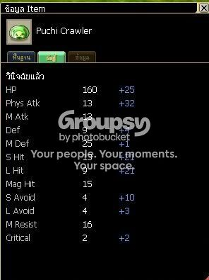

ของคุณ+แค่17เองนะ
http://eco.froztic.in.th/archive/ecofanclub/
Ride Crawler หนอนซิ่ง
http://eco.froztic.in.th/archive/ecofanclub/viewtopic.php?f=25&t=5045
หน้า 13 จากทั้งหมด 29
:oops: L.Hit ของนาย+แค่ 17เองนะ ไม่ใช้21
Re: Ride Crawler หนอนซิ่ง


ผิดพลาดดด
HP:160
ATK:13
M.ATK:13
DEF:7
M.DEF:25
S.HIT:9
L.HIT:8
M.HIT:30
S.AVOID:4
L.AVOID:4
M.RST:16
CRITICAL:2
CAPA: +70
PAYL: +70
+242
+39
+0
+30
+1
+27
+48
+0
+12
+12
+2
+12
เอามาแปะให้ เพราะ เค้าลง หนอนคนละตัว - -
ไปแว้ว อัพต่อ ตั้งแต่ 7 โมงเช้า ยังไม่ได้เลย เหอๆ
ATK:13
M.ATK:13
DEF:7
M.DEF:25
S.HIT:9
L.HIT:8
M.HIT:30
S.AVOID:4
L.AVOID:4
M.RST:16
CRITICAL:2
CAPA: +70
PAYL: +70
+242
+39
+0
+30
+1
+27
+48
+0
+12
+12
+2
+12
เอามาแปะให้ เพราะ เค้าลง หนอนคนละตัว - -
ไปแว้ว อัพต่อ ตั้งแต่ 7 โมงเช้า ยังไม่ได้เลย เหอๆ
ใน wiki บอกว่า
+320
+32
+1
+24
+40
+27
+21
+1
+20
+16
+26
+10
+320
+32
+1
+24
+40
+27
+21
+1
+20
+16
+26
+10
อัพหนอนผิดตัวนะคะ
ตัวที่ต้องอัพชื่อ Puchi Crawler ได้จากเควสที่ 2 ที่ต้องเอาสัตว์อื่นไปแลกมา
ว่าแต่ได้หนอนมาแล้ว อยากเลือกสีใหม่อ่ะ ทำได้มั้ย?
ตัวที่ต้องอัพชื่อ Puchi Crawler ได้จากเควสที่ 2 ที่ต้องเอาสัตว์อื่นไปแลกมา
ว่าแต่ได้หนอนมาแล้ว อยากเลือกสีใหม่อ่ะ ทำได้มั้ย?
มีวิธีไหน ทำให้หนอน วิ่งเร็วไหมครับ ?
kuma เขียน:มีวิธีไหน ทำให้หนอน วิ่งเร็วไหมครับ ?
หนอนนะมะใช่มังกรจาให้วิ่งเร็ว แถมถ้าขี่มันนี่วิ่งแข่งกะเต่าได้เลย
Re: Ride Crawler หนอนซิ่ง
-------------------------------------------------------------------------------
stat นี้ถูกแล้วค่ะ เราเพิ่งไปเปลีย่นเป็นหนอนซิ่งมาสดๆตะกี้เลย
ส่วนนี้ stat หนอนเรานะ


ใช้เวลา เช้า จรด เย็น เราพาไปตีที่ฝั่งตะวันออกอ่าจ้ะ
หนอน ตัวใหญ่เขียวๆ เจาะเข้าง่ายดี
ไก่ มะค่อยเข้าค่ะ ตัวอื่นก็พอใช้ได้ แต่ระวังบอสด้วยนะคะ
เราจะเห็นpet อื่นอัพกันง่ายมากๆ หนอนจะค่อยๆอัพค่ะ อดทนหน่อยไม่นานเกินรอ ^^

ในที่สุดก็ได้ซิ่ง ...( อย่างช้าๆ) -*-
ตอนพัฒนาเลเวลหนอน อ่ะ อยากทราบว่าหนอนของพวกคุณได้+ค่าสเตตัสอะไรบ้างคับ
ของผม AGI+1
และตอนเป็นหนอนซิ่งแล้ว ทำไมค่าในรูปมันถึงเป็นงี้คับ ในวงกลมอ่ะ(ตัวเลขสีเหลือง)

คัยได้ไม่เหมือนกับผมบ้าง
ของผม AGI+1
และตอนเป็นหนอนซิ่งแล้ว ทำไมค่าในรูปมันถึงเป็นงี้คับ ในวงกลมอ่ะ(ตัวเลขสีเหลือง)

คัยได้ไม่เหมือนกับผมบ้าง
แล่มเลยงับพี่น้อง 8)
Puchi Crawler
ไม่มีให้รับ อะคับ ขนาดไปถาม เจ้าของกระทู้ในเกม ( ดีนะ แอดชื่อไว้ วันแรกๆ ที่เล่นกัน )
เค้าก้ยังไม่ได้เยย ผมละงง - -
ว่าแต่ ปิเอล อยุ่หนใด เพื่อนถาม ผมมะรุ ที่รุ้ๆ เข้าเกม ไม่ได้ -*-
ไม่มีให้รับ อะคับ ขนาดไปถาม เจ้าของกระทู้ในเกม ( ดีนะ แอดชื่อไว้ วันแรกๆ ที่เล่นกัน )
เค้าก้ยังไม่ได้เยย ผมละงง - -
ว่าแต่ ปิเอล อยุ่หนใด เพื่อนถาม ผมมะรุ ที่รุ้ๆ เข้าเกม ไม่ได้ -*-
ปิเอลอยู่ในเมืองฟาอีส จุดแดงบนซ้ายสุดเลยมั้ง
คุยแล้วเอาสัตว์ไปแลก จะได้ Small Crawler (หรือ Puchi Crawler ตัวเดียวกัน)
คุยแล้วเอาสัตว์ไปแลก จะได้ Small Crawler (หรือ Puchi Crawler ตัวเดียวกัน)
-ถ้าผมใช้ตัวหลักสเก้าเวล31ไปเอาหนอนจิ๋วมาเเล้วเอามาฝึกจนเต็ม
-เเล้วให้อีกตัวนึงที่เป็นเเม่ค้าทำเควสที่ต้องใช้กระหลำเเลกหนอนมา(คือตัวเเม่ค้าจะคุยกับgot of petได้)
เเล้วผมจะเดลหนอนจาก ตัวหลักมาให้เเม่ค้า(ที่คุยกะคุนตาได้)เเล้วให้เเม่ค้าเอาหนอนมาเปลี่ยนเป็น หนอนซิ่งกับคุนตาได้มั้ยอ่ะครับ
ปล.งงมั้ยอ่ะ
-เเล้วให้อีกตัวนึงที่เป็นเเม่ค้าทำเควสที่ต้องใช้กระหลำเเลกหนอนมา(คือตัวเเม่ค้าจะคุยกับgot of petได้)
เเล้วผมจะเดลหนอนจาก ตัวหลักมาให้เเม่ค้า(ที่คุยกะคุนตาได้)เเล้วให้เเม่ค้าเอาหนอนมาเปลี่ยนเป็น หนอนซิ่งกับคุนตาได้มั้ยอ่ะครับ
ปล.งงมั้ยอ่ะ